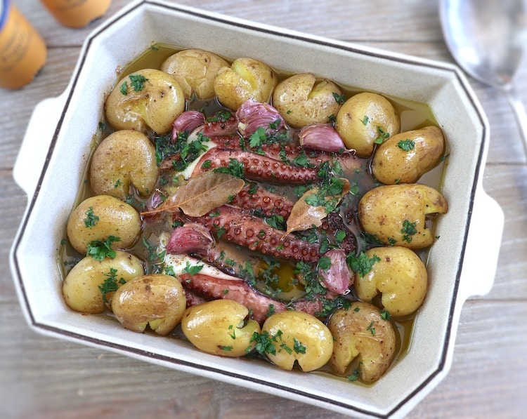

Polvo à Lagareiro

Description
This delicious, simple and traditional recipe of baked octopus with potatoes is highly appreciated in Portugal.
It's a very simple recipe to make, cook the potatoes and the octopus, season with garlic, pepper and bay leaf and bake.
Sprinkle with chopped parsley and serve. Bon appetit!
Ingredients
- octopus
- onions
- small potatoes
- olive Oil
- garlic
- parsley
- bay Leaf
- pepper
- salt
Steps
- Clean and wash the octopus. Place the octopus on a saucepan with water and a peeled onion.
Cook over medium-high heat for about 45 minutes. When the octopus is cooked, Place it on a plate and let it cool slightly.
Cut the tentacles and set aside.
- Wash the potatoes very well with the peel. Place the potatoes in a saucepan with water seasoned with salt.
Cook over medium-high heat for about 25 minutes. When the potatoes are cooked, place them on a plate and let them cool slightly.
Smash the potatoes slightly.
- Preheat the oven to 180ºC (350ºF).
- Place the octopus tentacles and the potatoes on a baking dish. Season with unpeeled crushed garlic, pepper and bay leaf.
Drizzle with olive oil and bake until slightly golden, about 30 to 35 minutes. Occasionally, drizzle the octopus and the potatoes with the olive oil.
- Turn off the oven, sprinkle with chopped parsley and serve !